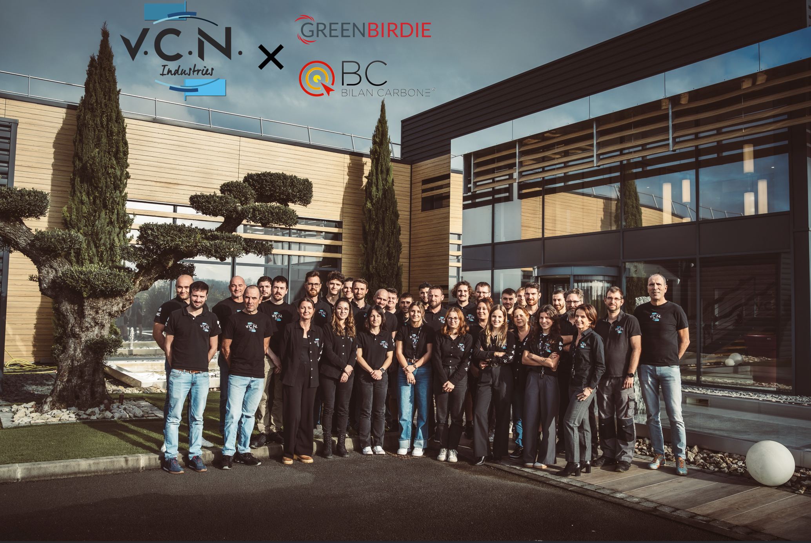

Dans l'industrie, engager une démarche de décarbonation commence par une question simple : où se situent réellement les émissions de gaz à effet de serre de l'entreprise ? La réponse n'est pas toujours là où on l'attend. C'est tout l'intérêt de la démarche engagée par VCN Industries, spécialiste du décolletage et de l'usinage de précision implanté à Sigoulès-et-Flaugeac, en Dordogne, et intervenant notamment pour les secteurs de l'aéronautique, du médical et de la défense.

Avec le soutien de Bpifrance et de l'ADEME, GREENBIRDIE a accompagné VCN Industries dans la réalisation d'un Diag Décarbon'Action afin de mesurer son empreinte carbone, d'en comprendre les principaux déterminants et d'identifier les leviers d'action adaptés à la réalité de son activité.
478 tonnes de CO2e : mesurer pour comprendre où agir
Le bilan réalisé sur l'exercice 2025 évalue l'empreinte de l'entreprise à 478 tonnes de CO2 équivalent. L'analyse couvre l'ensemble de la chaîne de valeur : énergie, matières premières, sous-traitance, immobilisations, déplacements, fret ou encore déchets.
Mais l'intérêt d'un bilan carbone ne réside pas uniquement dans son résultat global. Il permet surtout de comprendre comment se répartissent les émissions et donc de concentrer les efforts sur les postes les plus significatifs. Dans le cas de VCN Industries, les principaux postes sont notamment :
- les achats de services et la sous-traitance ;
- les matières premières ;
- les immobilisations ;
- les déplacements ;
- l'énergie.
Cette photographie permet ainsi d'aller au-delà d'une approche de la décarbonation qui serait limitée aux seules consommations énergétiques du site.
totale (exercice 2025)
liées au titane
liées à la sous-traitance
Le poids des matières premières dans l'industrie de précision
Le diagnostic fait apparaître un enseignement particulièrement significatif : le titane représente à lui seul 74 % des émissions associées aux matières premières de VCN Industries. L'inox constitue le deuxième contributeur de ce poste.
Cette situation s'explique par les quantités utilisées, mais également par l'empreinte carbone très différente des métaux selon leur nature, leur origine et leurs procédés de fabrication.
Pour autant, dans des secteurs comme l'aéronautique, le médical ou la défense, un industriel comme VCN ne choisit pas librement la composition des pièces qu'il fabrique. Nuances métallurgiques, caractéristiques techniques, procédés et qualifications sont très souvent définis par le donneur d'ordre.
La réduction de l'empreinte des matières ne consiste donc pas simplement à substituer un métal par un autre. Elle suppose plutôt de travailler progressivement sur :
- une meilleure connaissance de l'origine et de l'empreinte carbone des matières achetées ;
- la traçabilité des facteurs d'émission des différents fournisseurs ;
- l'identification de filières de matières recyclées ou à plus faible empreinte ;
- l'optimisation des quantités de matière utilisées ;
- la valorisation des copeaux métalliques ;
- et, lorsque les exigences techniques le permettent, la proposition d'alternatives aux clients.
La décarbonation devient alors un sujet de dialogue entre l'industriel, ses fournisseurs et ses donneurs d'ordre.
La sous-traitance : agir sur une chaîne de valeur que l'entreprise ne maîtrise pas seule
La même logique s'applique à la sous-traitance. Les prestations sous-traitées représentent une part importante de l'empreinte carbone de VCN Industries : 78 % des émissions du poste consacré aux services sont liées à la sous-traitance. Traitements thermiques, traitements de surface, passivation ou encore soudure font partie intégrante du processus industriel mais sont réalisés par des partenaires extérieurs.
L'enjeu consiste donc d'abord à mieux connaître leur performance carbone. La démarche peut notamment conduire à demander progressivement aux partenaires leurs propres données d'émissions, à privilégier des facteurs d'émission physiques plutôt que des estimations monétaires et à intégrer la performance carbone parmi les critères d'analyse des fournisseurs.
Là encore, les évolutions doivent rester compatibles avec les exigences techniques, les qualifications et les prescriptions des clients. L'objectif n'est pas de modifier brutalement une chaîne d'approvisionnement éprouvée, mais de faire progressivement de la donnée carbone un critère supplémentaire de décision industrielle.
Une entreprise qui avait déjà engagé sa transition énergétique
Le bilan permet également de mettre en perspective les actions déjà réalisées par VCN Industries. L'entreprise dispose notamment d'une ombrière photovoltaïque qui a produit environ 330 MWh en 2025, soit près de 26 % des besoins électriques du site couverts par une production locale.
VCN Industries a également entièrement revu son système de chaud et de froid dans l'atelier avec la mise en place d'une récupération de chaleur, opérationnelle depuis début 2026. L'entreprise mène par ailleurs plusieurs actions d'économie circulaire, notamment à travers le recyclage des copeaux métalliques et la récupération des huiles utilisées dans ses procédés.
Une décarbonation forcément globale
Ces actions montrent pourquoi une stratégie carbone doit être globale. Une entreprise peut avoir déjà fortement travaillé sur son énergie et découvrir, grâce à son bilan carbone, que l'étape suivante se joue principalement dans les matières, les achats et la chaîne de valeur.
Du bilan carbone au plan d'action
À partir de cette analyse, les équipes de VCN Industries et GREENBIRDIE ont travaillé ensemble à la construction d'un plan d'action adapté aux contraintes de l'entreprise. Plusieurs axes ont notamment été étudiés :
- améliorer la connaissance de l'empreinte carbone des matières premières ;
- obtenir progressivement davantage de données auprès des sous-traitants ;
- intégrer la dimension carbone dans les décisions d'achat lorsque cela est possible ;
- étudier avec les clients et fournisseurs des solutions de matières et de procédés à plus faible impact ;
- poursuivre l'amélioration de la performance énergétique du site ;
- agir sur les déplacements des collaborateurs et le transport ;
- structurer le suivi des données carbone dans la durée.
Cette dernière dimension est essentielle. Le premier bilan constitue une photographie. La véritable démarche de décarbonation commence lorsque l'entreprise organise le suivi de ses indicateurs et intègre progressivement le carbone dans ses décisions.
Répondre aux nouvelles attentes des donneurs d'ordre
Pour VCN Industries, la démarche répond également à une évolution très concrète de son marché. Dans les filières aéronautique, médicale ou défense, les donneurs d'ordre demandent de plus en plus à leurs fournisseurs de documenter leur empreinte environnementale et les actions engagées pour la réduire.
Pour une PME industrielle, disposer d'une donnée carbone robuste permet alors de répondre plus sereinement aux questionnaires clients, aux appels d'offres et aux politiques RSE des grands groupes. À terme, la capacité à connaître l'empreinte de ses matières, de ses procédés et de sa chaîne de fournisseurs peut ainsi devenir un élément de compétitivité et de différenciation.
Décarboner l'industrie nécessite d'agir sur tout l'écosystème
Le cas VCN Industries illustre finalement une réalité fondamentale de la transition industrielle. Une entreprise ne maîtrise pas seule l'ensemble de son empreinte carbone. Elle dépend de ses fournisseurs, de ses sous-traitants mais également des choix techniques et des spécifications de ses clients.
La décarbonation consiste donc autant à réduire ses propres consommations qu'à mesurer, dialoguer, proposer et progressivement entraîner l'ensemble de sa chaîne de valeur. C'est précisément l'objectif d'un Diag Décarbon'Action : transformer une mesure carbone en une feuille de route adaptée aux réalités opérationnelles de l'entreprise.